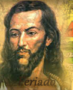
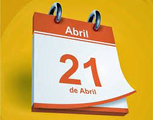

Meu Feriado
O dia 21 de abril é feriado de nível nacional, ou seja, em todos os estados do Brasil, mais o Distrito Federal, nesta data, cessam-se os trabalhos e comemora-se um dia em minha homenagem.
Morri enforcado pelo crime de trair a coroa portuguesa e a Rainha D. Maria I. Isso aconteceu em 1792. Em 1965, quase 200 anos mais tarde, no Governo do Presidente Castelo Branco, o feriado de Tiradentes foi proclamado. Você deve estar se perguntando; “Ué, mas por que temos um feriado nacional para um homem condenado por traição à coroa portuguesa a mais de 300 anos?”.
Existem muitas hipóteses para o porquê da nomeação de um dia em minha homenagem. Uma das mais fortes se baseia na ideia de que a proclamação do feriado de Tiradentes foi parte de um plano para criação de heróis brasileiros.
Por que dia 21?
No dia 21 de abril, todos os anos, em todo o território brasileiro, se comemora o dia de Tiradentes. Os trabalhos cessam, as escolas não abrem e o dia é de descanso em todo o país.
Já contei, em outros posts, um pouco de minha história e os motivos para ter um feriado em minha homenagem, mas, você já se perguntou por que foi escolhido o dia 21 de abril para essa comemoração?
Bom, sinto dizer mas a resposta não é lá tão surpreendente. O motivo pelo qual foi escolhido essa data é bem simples: fui enforcado no dia 21 de abril de 1792.